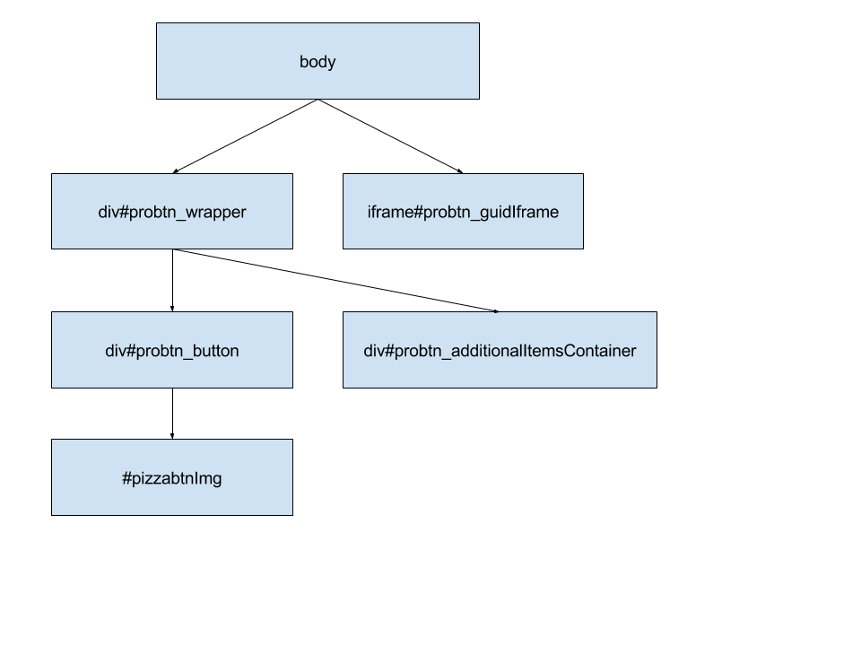

Unobvious moments, tips and other additional data¶
Description of the button’s DOM model¶
Base scheme of button elements
#probtn_wrapper¶
Base element which contain button, active zones and block with additional materials (preuploaded images, tracking links, images for close areas, etc.)
iframe#probtn_guidIframe¶
Iframe, which used for global users tracing at all sites with probtn code.
div#probtn_additionalItemsContainer¶
In this div button add all aditional elements required for button work (preloaded images, tracking links, close area images, etc)
div#probtn_button¶
Element, inside which directly located imagebutton iframe, hint text and other elements required for button (like iframe overlay div).
#pizzabtnImg¶
Image or iframe (with html creative) of button
Tips&tricks¶
Adding class for fancybox when page in iframe is ready¶
When fancybox modal window opened after iframe loaded fot div element with class .fancybox-inner added class opened (to know that page in iframe loaded and we can change some styles, for example hide background).
Hide modal window close button¶
TO hide close button of modal window (for example in case, when page inside iframe realize closing of modal windowbutton using postMessage) you can add at Z Custom CSS (or directly at site) this CSS styles:
.fancybox-close {
display: none;
top: 0px !important;
right: 0px !important;
}